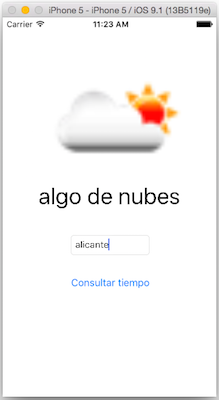

Ejercicios
Ejercicios (2,5 puntos)¶
Vamos a realizar una pequeña aplicación para consultar el tiempo meteorológico. La aplicación terminada tendrá el aspecto que se muestra en la figura

Salvo que ya estés metiendo todos los ejercicios de la asignatura en un único repositorio git, asegúrate de que cuando creas el proyecto Xcode crea un repositorio de git para él (3ª pantalla del asistente), lo necesitarás para ir haciendo commit de los distintos apartados del ejercicio.
A. Creación de la interfaz (0,5 puntos)¶
Como se ve en la figura, la interfaz tiene 4 componentes, seleccionables mediante el panel de componentes gráficos de la esquina inferior derecha de Xcode: - Una imagen (image view), para mostrar un icono con el estado del tiempo. Inicialmente estará vacía - Una etiqueta (label), para mostrar el estado del tiempo de forma textual. Inicialmente estará vacía - Un campo de texto de 1 línea, para teclear la localidad (text field) - Un botón pulsable (button) que pondrá “Consultar tiempo”
Como ya hiciste en la aplicación de UADivino, conecta los componentes de la interfaz con el ViewController:
- Outlets: recuerda que son componentes de la interfaz a los que quieres acceder para consultar/modificar sus propiedades. Se crean con
Ctrl+arrastrardesde el componente hasta elViewController.swift. Crea outlets para la imagen, la etiqueta y el campo de texto - Action: recuerda que sirve para ejecutar tu código en respuesta a eventos sobre la interfaz. Se crean igual que los outlets. Cada action genera un método. Crea un action para el botón de “consultar tiempo”
B. Consulta del tiempo en la consola de depuración (0,5 puntos)¶
El estado del tiempo nos lo da un servicio externo, Openweathermap, que además de la web ofrece la API que vamos a usar.
Para obtener el tiempo en una localidad, con los mensajes traducidos a español y usando unidades del sistema métrico, hay que hacer una petición HTTP a la URL https://api.openweathermap.org/data/2.5/weather?lang=es&units=metric&app_id=<TU_API_KEY>&q=concatenándole la localidad a buscar. El parámetro app_id debe contener nuestra API key (nuestra clave de desarrollador, podéis daros de alta para obtener la vuestra propia). Por ejemplo si clicas en este enlace verás el tiempo para Alicante. El API devuelve los datos en formato JSON, que habrá que analizar para extraer la información que nos interese.
Para hacer una petición HTTP en iOS podemos usar la clase URLSession. Copia el siguiente código en el ViewController.swift
1 2 3 4 5 6 7 8 9 10 11 12 13 14 15 16 17 18 19 20 21 22 | let OW_URL_BASE = "https://api.openweathermap.org/data/2.5/weather?lang=es&units=metric&appid=1adb13e22f23c3de1ca37f3be90763a9&q=" let OW_URL_BASE_ICON = "https://openweathermap.org/img/w/" func consultarTiempo(localidad:String) { let urlString = OW_URL_BASE+localidad let url = URL(string:urlString) let dataTask = URLSession.shared.dataTask(with: url!) { datos, respuesta, error in let jsonStd = try! JSONSerialization.jsonObject(with: datos!, options: JSONSerialization.ReadingOptions.mutableContainers) as! [String:AnyObject] let weather = jsonStd["weather"]! as! [AnyObject] let currentWeather = weather[0] as! [String:AnyObject] let descripcion = currentWeather["description"]! as! String print("El tiempo en \(localidad) es: \(descripcion)") //Estamos bajándonos la imagen pero todavía no la usamos let icono = currentWeather["icon"]! as! String if let urlIcono = URL(string: self.OW_URL_BASE_ICON+icono+".png" ) { let datosIcono = try! Data(contentsOf: urlIcono) let imagenIcono = UIImage(data: datosIcono) } } dataTask.resume() } |
Aunque no esté explícito en el código anterior, URLSession lanza la petición en background cuando se ejecuta el resume y cuando llega la respuesta del servidor se ejecuta el código de la clausura
En el action asociado al botón de "consultar tiempo" debes obtener el texto del campo de texto (propiedad text) y llamar a la función consultarTiempo que acabas de copiar y pegar, pasándole este dato.
Si pruebas la aplicación y todo ha ido bien, debería aparecer el estado del tiempo en la consola. Haz un commit con el comentario "Apartado B"
C. Mostrar el tiempo en la interfaz (0,5 puntos)¶
Añade código que muestre el tiempo en la interfaz del móvil. Lo primero que puedes hacer es mostrarle al usuario que se está haciendo una operación de red, esto lo puedes hacer con un spinner que puedes hacer aparecer automáticamente en la barra de status de la parte superior. Para poner el spinner harías:
1 | UIApplication.shared.isNetworkActivityIndicatorVisible = true |
y para quitarlo, idem pero asignándole false
Pon en marcha el spinner justo antes del dataTask.resume() y luego páralo una vez se haya cargado el icono del tiempo (la línea let imagenIcono = UIImage(data: datosIcono)). Pero recuerda que La interfaz solo se puede "tocar" desde la cola de operaciones principal. La llamada a dataTask.resume() está en esta cola, pero el código que parsea los datos del tiempo está en background, como hemos dicho. Tendrás que acceder desde allí a la cola principal para parar el spinner.
Si el spinner no se ve porque la respuesta del servidor llega demasiado rápido, puedes probar a poner un sleep(segundos) con el número de segundos que quieras, para parar artificialmente la ejecución.
Una vez solucionado el tema del spinner añade código para actualizar el label y la image. De nuevo recuerda que estas operaciones debes hacerlas desde la cola principal.
Haz un commit poniendo como comentario "Apartado C".
D. Gestión de errores en Swift (0,5)¶
Verás que el código que has copiado y pegado tiene un par de llamadas con try!. Aquí lo que estamos diciendo es que estas funciones podrían fallar pero Sabemos que no lo van a hacer. Quita la admiración de los try y mira qué sucede. ¿Cómo podrías arreglar el código para que compile y funcione como antes sin volver a poner el !?. Hazlo y haz un commit poniendo como comentario "apartado D".
E. Delegates y protocols (0,5)¶
Vamos a hacer que en el campo de texto no se puedan introducir caracteres numéricos.
En iOS los campos de texto pueden tener un objeto delegate al que el campo de texto le va "avisando" de las cosas que ocurren en su "ciclo de vida" (se ha empezado a escribir, se ha terminado de escribir, se ha insertado texto ...). Este objeto debe ser conforme al protocolo UITextFieldDelegate. Aprovecharemos cuando el campo nos avise de que el usuario está escribiendo texto para rechazarlo si es numérico.
Vamos a convertir el ViewController.swift en delegate del campo de texto, para ello hay que:
- Especificar en la cabecera de
ViewControllerque es una clase conforme al protocoloUITextFieldDelegate. Mira las transparencias para ver cómo se pone esto - En el método
viewDidLoadle decimos al campo de texto que somos su delegate (fijamos su propiedaddelegateaself) - El campo de texto nos avisará de que el usuario ha escrito un carácter nuevo (o ha borrado uno), llamando a un método
1 2 3 | func textField(_ textField: UITextField, shouldChangeCharactersIn range: NSRange, replacementString string: String) -> Bool { //código del método } |
Tendremos que definir este método y escribir su código, teniendo en cuenta que el parámetro string es el nuevo texto que el usuario pretende insertar. Y que si devolvemos true dejamos que el texto se inserte, pero si devolvemos false no lo permitimos. Comprueba si se puede convertir el parámetro string a entero y si se puede devuelve false (no dejamos escribir). En caso contrario, devuelve true.
Una vez hecho y comprobado que funciona, haz un commit con el comentario "Apartado E"